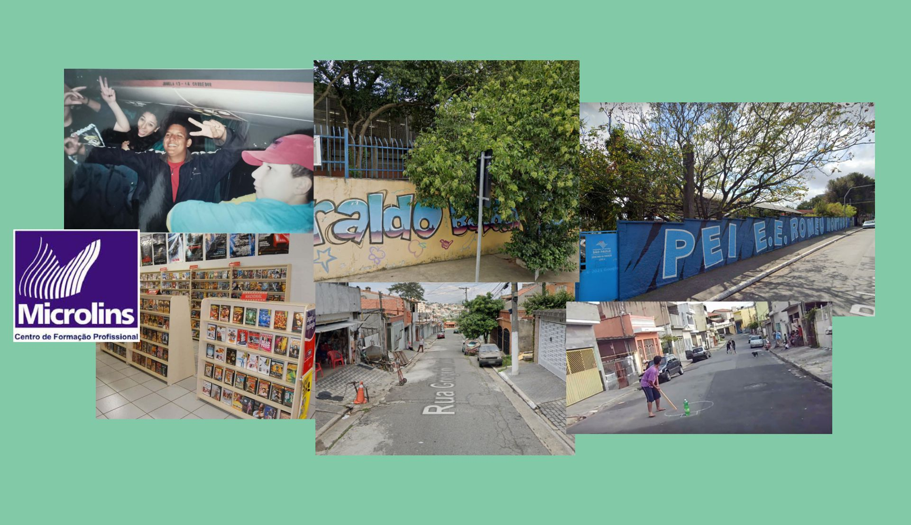

Escolas
Estudou da 5 á 8 serie em uma escola chamada Heraldo Barbuy, na zonal keste de são Paulo. E o ensino médio em uma escola estatual vizinha, chamada Romeu Montoro. Pouquíssimas lembranças boas da escola, foi algo que suportou e torceu para terminar logo.
Já trabalhava
Ali no ensino médio já trabalhava, trabalhou como entregador de panfletos na Microlins, feirante, e na cantina da escola onde estudou o ensino médio, que apesar de super cansativo era bastante divertido e ele podia comer muitos doces.
Brincando na rua
Mesmo já tendo um grande senso de realidade, Wesley brincou muito na rua, vivia com dedão do pé estourado, jogava vídeo game com os amigos, e alugava com seus amigos a promoção 3 fitas VHS pelo preço de 1, era “o evento”, todos se reuniam na casa do Rafael (único da rua com TV 29 polegadas. Rs).